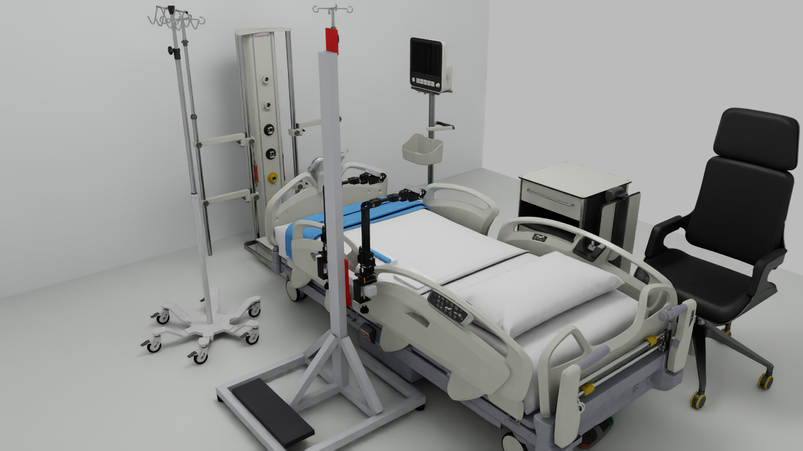
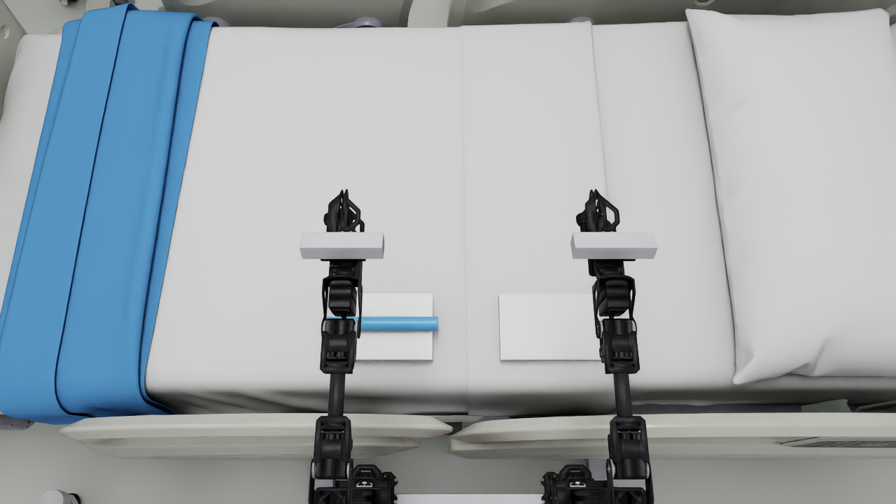
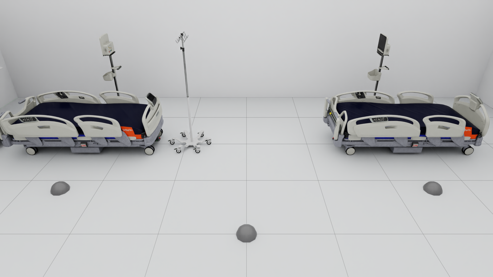

ICU-GuardBot
A bedside robot that helps ICU nurses notice early signs of sepsis, by watching the data that is already at the bedside and flagging trends for the team to review.
Um robô de beira de leito que ajuda a enfermagem da UTI a perceber cedo sinais de sepse, observando os dados que já estão ao lado do paciente e sinalizando tendências para a equipe avaliar.

Why sepsisPor que sepse
Sepsis is one of the leading causes of death in intensive care, and recognizing it early makes a difference. The signals are spread across devices and charts: the monitor, the thermometer, the urine bag, the lab results. Nurses check them on rounds, between many other tasks. ICU-GuardBot keeps watching those signals between rounds and brings changes to the team's attention.
A sepse é uma das principais causas de morte em terapia intensiva, e reconhecê-la cedo faz diferença. Os sinais estão espalhados: o monitor, o termômetro, a bolsa de urina, os exames. A enfermagem confere tudo nas rondas, entre muitas outras tarefas. O ICU-GuardBot continua observando esses sinais entre as rondas e leva as mudanças à atenção da equipe.
How it worksComo funciona
The robot reads what is already at the bedside, without connecting to or changing any medical equipment. Identifiable data never leaves the hospital.
O robô lê o que já está à beira do leito, sem se conectar nem alterar nenhum equipamento médico. Dados que identificam o paciente não saem do hospital.
Read the monitorLer o monitor
Wrist cameras point at the patient monitor and read heart rate, SpO2, blood pressure and respiratory rate from the screen.
As câmeras dos punhos apontam para o monitor e leem frequência cardíaca, SpO2, pressão arterial e frequência respiratória na tela.
on the robotno robôMeasure and observeMedir e observar
An arm-mounted MLX90614 infrared sensor takes skin temperature; cameras track urine volume and color in the collection bag over time.
Um sensor infravermelho MLX90614 no braço mede a temperatura da pele; as câmeras acompanham volume e cor da urina na bolsa coletora ao longo do tempo.
on the robotno robôProcess at the edgeProcessar na borda
A Jetson on the robot turns images into numbers and sends only a timestamped summary, with no images and no patient identity.
Uma Jetson no robô transforma as imagens em números e envia só um resumo com horário, sem imagens e sem identificação do paciente.
NVIDIA JetsonCompare and flagComparar e sinalizar
A local AI workstation combines the summary with the patient's record and published scales (SIRS, NEWS2, SOFA) and flags trends for nurses to review.
Uma estação local com IA junta o resumo ao prontuário e a escalas publicadas (SIRS, NEWS2, SOFA) e sinaliza tendências para a enfermagem avaliar.
local RTX workstationestação local com RTXBuilt simulation-firstConstruído primeiro em simulação
Every motion is planned and tested in a digital twin of an ICU before it runs on hardware. The ICU is built in NVIDIA Isaac Sim and Omniverse from SimReady hospital assets. ROS 2 and MoveIt 2 drive the simulated arms through the same driver used on the real arms.
Cada movimento é planejado e testado num gêmeo digital de UTI antes de rodar no hardware. A UTI é montada no NVIDIA Isaac Sim e no Omniverse com assets hospitalares SimReady. ROS 2 e MoveIt 2 movem os braços simulados pelo mesmo driver usado nos braços reais.


Where we areOnde estamos
Honest status, updated November 2026. The sensing and alerting parts are still in development.
Estado real, atualizado em novembro de 2026. As partes de leitura dos sinais e de alerta ainda estão em desenvolvimento.
- ICU digital twin in Isaac Sim with SimReady assets and the OpenAMRobot 2.0 mobile baseGêmeo digital da UTI no Isaac Sim com assets SimReady e a base móvel OpenAMRobot 2.0DonePronto
- Bimanual torso with MoveIt 2, our ros2_control driver and the same code in simulation and on hardwareTorso bimanual com MoveIt 2, nosso driver ros2_control e o mesmo código na simulação e no hardwareDone in simulationPronto em simulação
- Move the robot software onto a Jetson Orin Nano Super and test the real armsLevar o software do robô para uma Jetson Orin Nano Super e testar os braços reaisIn progressEm andamento
- Read monitor screens with a vision-language model; skin temperature; urine output and colorLer as telas dos monitores com um modelo de visão e linguagem; temperatura da pele; volume e cor da urinaNextPróximo
- Validate scales and thresholds with the medical team; ethics committee approval before any study with patientsValidar escalas e limiares com a equipe médica; aprovação do comitê de ética antes de qualquer estudo com pacientesNextPróximo
TechnologyTecnologia
NVIDIA, in useNVIDIA, em uso
NVIDIA, nextNVIDIA, próximos
Robotics stackRobótica
Research use onlySomente para pesquisa
ICU-GuardBot is a research prototype. It is not a medical device, it has not been cleared by ANVISA or any other regulator, and it is not used in patient care. It supports nurses; it does not diagnose and does not replace clinical judgment. Any study with patients will follow ethics committee approval and Brazil's data protection law (LGPD).
O ICU-GuardBot é um protótipo de pesquisa. Não é um dispositivo médico, não foi aprovado pela ANVISA nem por outro órgão regulador e não é usado na assistência a pacientes. Ele apoia a enfermagem; não faz diagnóstico e não substitui o julgamento clínico. Qualquer estudo com pacientes seguirá a aprovação do comitê de ética e a LGPD.
TeamEquipe
LABRIOT · UTFPR
Laboratory at the Federal University of Technology – Paraná (UTFPR), Ponta Grossa campus, Brazil.
Laboratório da Universidade Tecnológica Federal do Paraná (UTFPR), câmpus Ponta Grossa.
Itamar Iliuk
Associate professor and NVIDIA Omniverse Ambassador. ICU-GuardBot is his Ambassador project.
Professor associado e NVIDIA Omniverse Ambassador. O ICU-GuardBot é o seu projeto de Ambassador.
Related workTrabalho relacionado
Industrial Gauge Monitor: reading analog instruments with NVIDIA Cosmos. The same idea will read patient monitor screens.
Industrial Gauge Monitor: leitura de instrumentos analógicos com NVIDIA Cosmos. A mesma ideia vai ler as telas dos monitores.